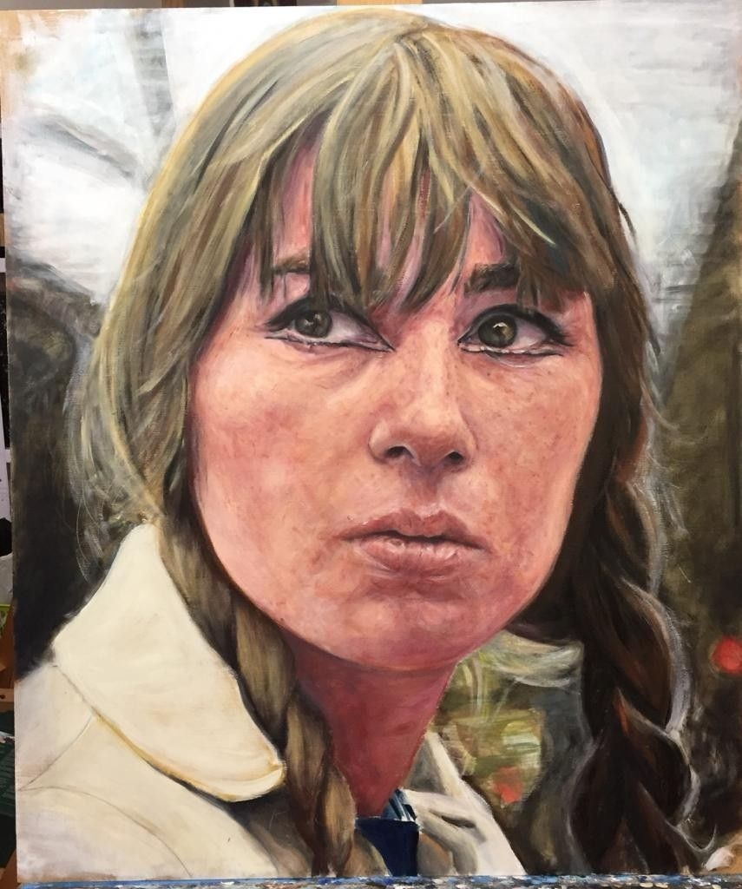
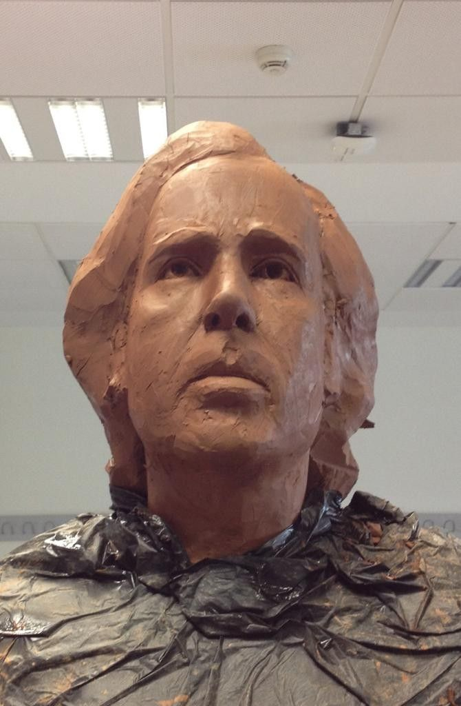
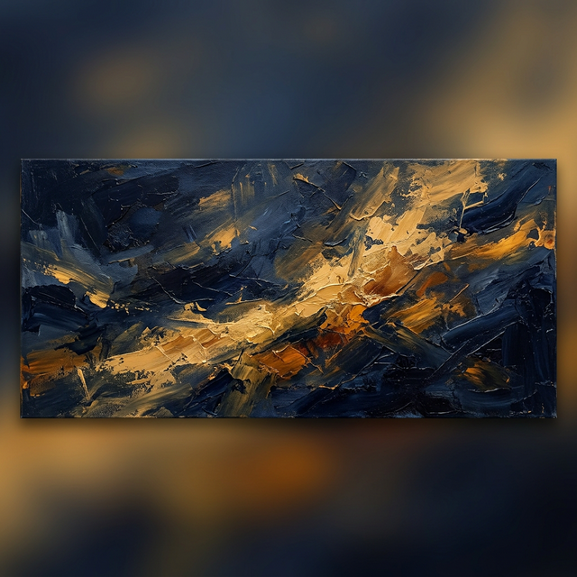
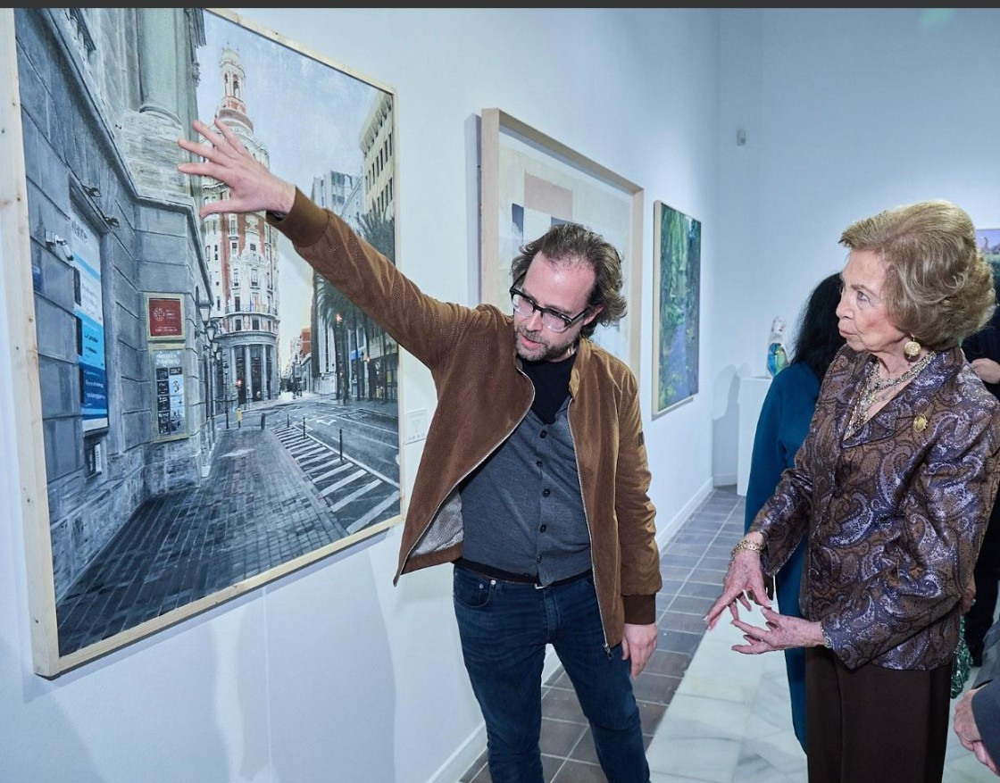

Galería
Una selección de obras recientes que reflejan mi evolución artística.




Escultor · Pintor Figurativo
Del plano al volumen, de la madera al alma
Ver Obra
Nacido en Teruel, Diego Peribañez Villalba es un escultor y pintor figurativo que encontró su vocación artística de forma tardía pero con la fuerza de una revelación. Tras estudiar Derecho y trabajar como promotor de viviendas, la crisis de 2008 y circunstancias personales le llevaron a replantearse la vida. Se mudó a Valencia y, rozando los cuarenta, cumplió un sueño: matricularse en Bellas Artes.
Su obra se centra en la talla de madera policromada y el retrato figurativo. "La madera tiene olor, calor, alma — es como si cada veta te dijera por dónde tienes que ir tallando", explica. Ha sido seleccionado seis veces en el Premio Reina Sofía de Pintura y Escultura, y su obra Koré — un retrato en madera de tilo de su esposa — ganó el Premio Fondo de Adquisición del Certamen Nacional de Valdepeñas, el más antiguo de España con 86 ediciones.
Actualmente trabaja desde su taller en Valencia entre maderas, lienzos y olor a disolvente. "El arte se parece mucho a la construcción: hay que medir, planificar, respetar la estructura... pero al final lo que construyes no es una vivienda sino una emoción".
Una selección de obras recientes que reflejan mi evolución artística.


¿Interesado en mi obra o en colaborar? No dudes en escribirme.